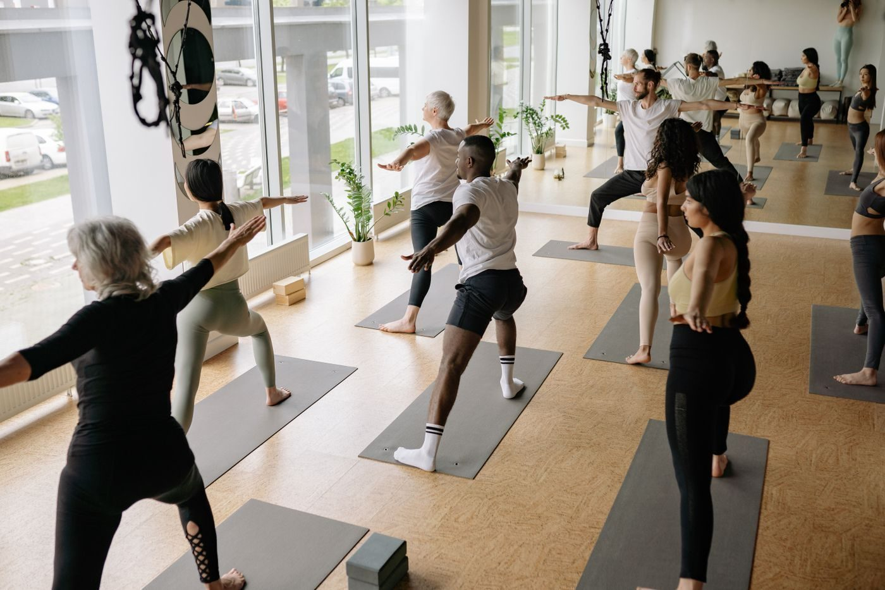

Pilates Bodies By Victoria
Stott-trained Pilates instruction in a renovated historic Main Street studio in Columbia.
Call (803) 730-3929 Email pilatesbodiesbyvictoria@gmail.com

About
Pilates Bodies By Victoria is a Stott-trained Pilates studio in Columbia, South Carolina. Instructor Victoria teaches group Reformer, Chair, and Tower classes and private sessions, with pre and post-natal, rehabilitation, aging in place, breast cancer survivor, autism-adapted, and veterans interest. The studio sits in a renovated historic Main Street building and is fully accessible.
Classes and sessions
Group Reformer classes
Group Reformer classes, taught by Stott-trained instructor Victoria.
Group Chair classes
Group Chair classes, taught by Stott-trained instructor Victoria.
Group Tower classes
Group Tower classes, taught by Stott-trained instructor Victoria.
Private sessions
Private sessions with instructor Victoria.
Pre and post-natal Pilates
Pre and post-natal Pilates, offered at the studio.
Rehabilitation Pilates
Rehabilitation Pilates, offered at the studio.
Aging in place
Aging in place Pilates, offered at the studio.
Breast cancer survivor sessions
Breast cancer survivor sessions, offered at the studio.
Autism-adapted sessions
Autism-adapted sessions, offered at the studio.
Veterans interest
Veterans interest, offered at the studio.
Class schedule and a fully accessible studio
Group classes run Monday 10:00 AM and 4:30 PM; Tuesday 6:00 and 7:00 AM, 3:30, 5:30, and 6:30 PM; Wednesday 7:00, 8:00, and 10:00 AM; Thursday 6:00 and 7:00 AM, 5:30 and 6:30 PM; Friday 8:00 and 10:00 AM and sometimes noon; Saturday 9:30 AM. The renovated historic Main Street studio is fully accessible. Call (803) 730-3929 or email pilatesbodiesbyvictoria@gmail.com to ask about a class.
Gallery


All gallery photos are stock photos, labeled as such. They show the kind of work and setting described on this page, not this business.
Visit
Address: 1633 Main St, Columbia, SC 29201
Hours: Monday to Thursday 6:30 AM to 7:30 PM, Friday 6:30 AM to 2:30 PM, Saturday 9:00 AM to 1:00 PM.
Phone: (803) 730-3929
Contact
Call (803) 730-3929 Email pilatesbodiesbyvictoria@gmail.com
Pilates Bodies By Victoria serves Columbia, SC. Questions? Call (803) 730-3929.